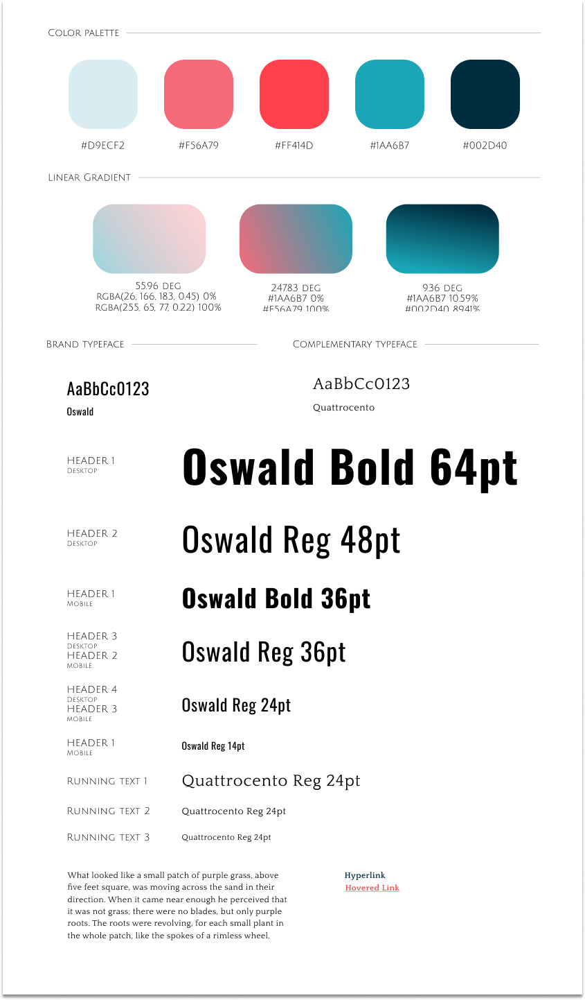
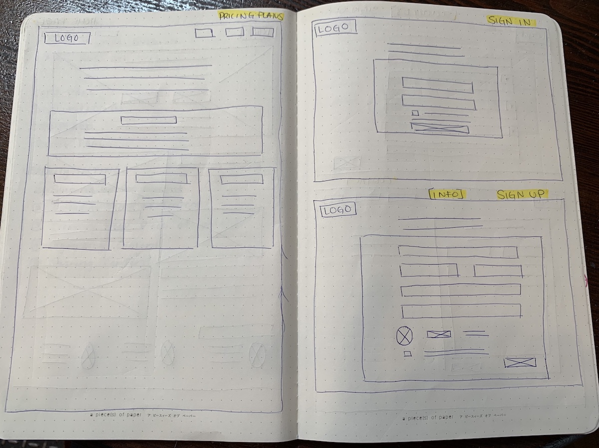

Hippocampus
RESEARCH | BRANDING | DESIGN
TOOLS
DELIVERABLES
Defining the Product
Hippocampus is a conceptual SaaS (software as a service) web application that provides cloud storage to users. It streamlines on providing an easy-to-use interface so that anyone can just login and start saving and organizing files in seconds.
PROBLEM
The cloud storage and organizational app market is relatively new, and despite having several major competitors, we believe that there is room for improvement. User-friendly interface with better organizational features are what he current market lacks.
SOLUTION
Hippocampus will automatically organize your items by file type and you can easily access them through the categories section via the navigation bar. It also allows you to easily create new folders and move files around to keep up with your organizational standards.
Research Process
USER SURVEYS
I surveyed cloud storage app users to learn more about the satisfactions and frustrations about their current cloud storage experiences.
With knowing that there is a huge market for cloud storage apps, I took that information and dug deeper to find out what currently lacked in their daily cloud storage usage today. I found that although the applications shined in creating and collaborating, what they lacked was ease-of-use and better organizational features.
The apps are “confusing to navigate, I’m sure there are 100 things I don’t know I can do or am doing wrong with cloud apps.”
The key takeaways from my initial user research via user interviews was that the new app should focus on organizational features and and easy-to-use navigational interface, yet I should include features such as creation of content and uploading and sharing options.
COMPETITIVE ANALYSIS


What these competitors don’t do as well and how a new competitor can stay afloat within this market is bettering the organization features. Out of Google Drive, Dropbox, or Box none of their biggest strengths were ease of use and organization. In addition, I think that the new competitor should focus on an organizational element of photos so that users can easy access and share photos in one spot.
USER PERSONAS
A common theme among these personas is that they all strive to have their files in one place and easily accessed. This showcases that organized files and an easy-to-use interface are all of utmost importance to them. Although they all use the app for different needs such as sharing, syncing, and storing all of these tasks are made easier and more efficient with better organizational features.
USER FLOWS
I created user flows on how the user could complete these tasks:
Branding & Identity
BRAINGSTORMING & SKETCHES
I really wanted to convey the message of a smart, yet modern app that would make users feel safe and confident using it. After some thorough brainstorming I came up with the name Hippocampus.
Ultimately, this name seemed to be the perfect fit because the name derives from the part of the brain that is responsible for processing long term memory and emotional responses. This represents the app because its main functionality is to to store your files and photos through cloud memory.
I went with a cartoonish looking logo and a modern graphics to help create that lighthearted feel but the bold name embodies the intelligence it is trying to convey.
STYLE GUIDE
Branding & Identity
WIREFRAMES & LOW-FIDELITY MOCKUPS
I loosely based the wireframes off of its major competitor, Google Drive and then tweaked and added its one brand identity later in the project.I then turned the wireframes into low-fidelity mockups so I could test it on users.
USER TESTING
I created the wireframes into a low-fidelity mockup and tested them on several people to see how the flow and functionality of the design worked for users.
HIGH-FIDELITY MOCKSUP & USER TESTING
I took the feedback and added in the style guide to create the high-fidelity mockups, which I used for the second round of testing. This time around I not only tested the functionality of the product but the visual aesthetics as well.
CHANGES
Refine the organizing/move options - add a move button with a quick drop down menu to allow an alternative option than just the drag and drop option

CHANGES
Change the background color of the pop up sign up menu on the homepage so that it sticks out to the users and they won’t have to navigate to a new page via the top nav bar

CHANGES
Change the background color of the “+ New” drop down panel to make it more cohesive with the homepage background

FINAL PROTOTYPE
I refined my high-fidelity mockups to create the final prototype of the web application.

CONCLUSION
The Hippocampus design process had both triumphs and tribulations. I learned a lot during the process.
Test early and often!
So many changes came from just two usability tests and one preference test
Keep it simple
Flashy designs aren’t always preferred or easiest to recognize
Keep your opinions in check
Users opinions matter more than your initial assumptions
Be organized!
Remember to document all work along the way